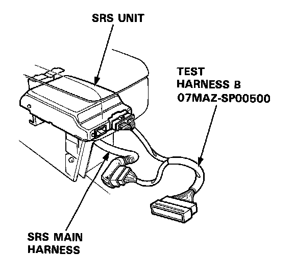
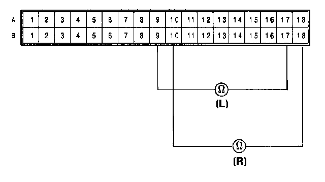
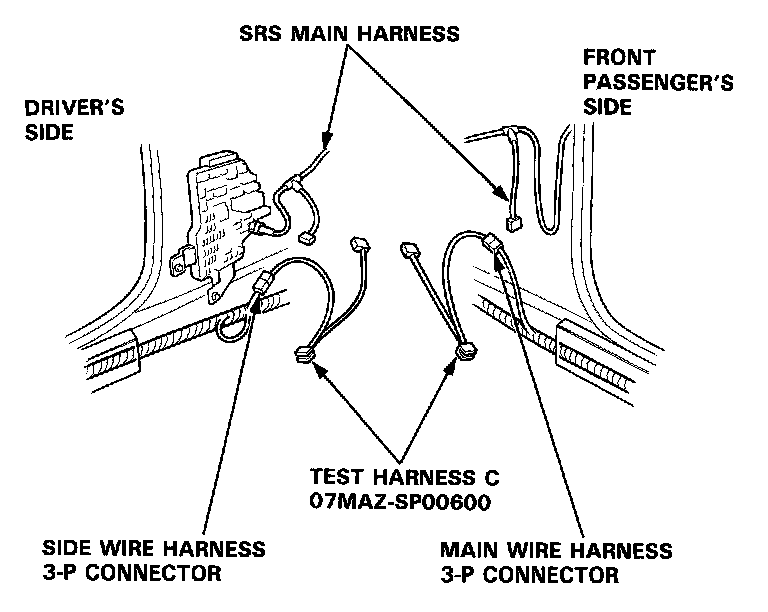
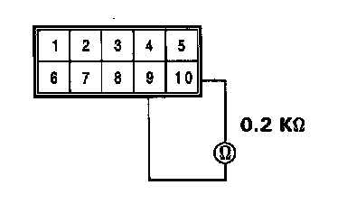
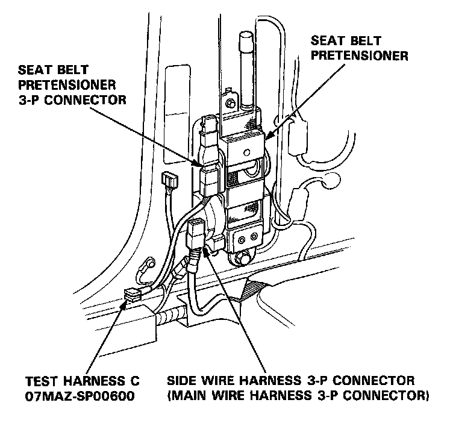
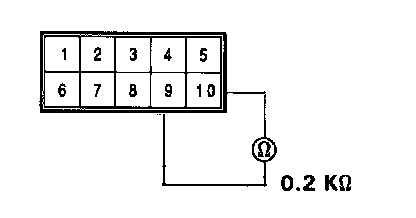

Failure Mode H
Mode H: Open in seat belt pretensioner (driver's side or front passenger's side).
NOTE:
- Before you disconnect the battery, be sure you get the customer's anti-theft radio code number.
- Do not disconnect the seat belt pretensioner 3-P connector for' the following test.
CAUTION:
- Disconnect the battery negative cable and then disconnect the positive cable.
- Before disconnecting the airbag connector(s), turn off the ignition switch and wait for at least 3 minutes to let the capacitor in the back-up circuit discharge. This will prevent a malfunction of the seat belt pretensioners.
- Before disconnecting any part of the SRS wire harness, install short connectors (RED) on the air- bag(s). After installing the short connector(s) on the airbag(s), immediately install one Short Connector "A" (Tool Number O7MAZ-SPOO2OO) on the cable reel connector (for the driver's airbag), and another on the SRS main harness connector (for the passenger's airbag). This will prevent any static electricity from triggering the seat belt pretensioners before you disconnect them - refer to "Short Connector Installation" procedure.
1. Connect Test Harness B between the SRS unit and SRS main harness 18-P connector.

2. Measure the resistance between the driver's seat belt pretensioner terminals B9 and Bi 7, and between the front passenger's seat belt pretensioner terminals B10 and B18.

- If resistance is more than 0.2K ohms, go to step 3.
- If resistance is less than 0.2K ohms, the SRS unit is faulty. Substitute a known-good SRS unit and recheck the voltages according to the chart in the "Indicator Stays On Continuously" procedure.
3. Disconnect the connector between the SRS main harness and the side wire harness 3-P connector (driver's side), and between the SRS main harness and the car main wire harness 3-P connector (front passenger's side). First connect Test Harness C to the side wire harness, and check resistance, then connect it to the car main wire harness, and check resistance again.

4. Measure the resistance between the No.9 terminal and the No. 10 terminal.

- If resistance is more than 0.2K ohms, go to step 5.
- If resistance is less than 0.2K ohms, the SRS main harness is faulty. Replace the SRS main harness and recheck the voltages according to the chart in the "Indicator Stays On Continuously" procedure.
5. Disconnect the 3-P connector from the driver's and front passenger's seat belt pretensioners, then connect Test Harness C to the seat-belt pretensioner half of the connector, first on the driver's side, then the passenger's side.

6. Measure the resistance between the No.9 terminal and No. 10 terminal.

- If resistance is more than 0.2K ohms, the seat-belt pretensioner is faulty; Replace it and recheck the voltages according to the chart in the "Indicator Stays On Continuously" procedure.
- If resistance is less than 0.2K ohms, the side wire harness or car main wire harness is faulty. Replace the faulty harness and recheck the voltages according to the chart in the "Indicator Stays On Continuously" procedure.